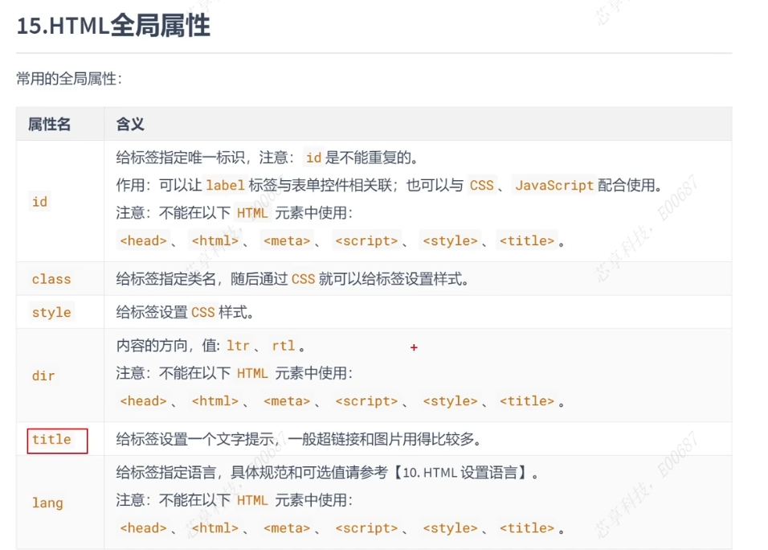

js编写位置
js代码编写至标签的onclick属性中
js推荐引入外部.js文件，使用script标签+src.一旦引入外部js代码，就不能再编写代码，即使编写浏览器也会忽略。如有需要可以再闯进新的script白哦前编写内部代码
基本语法
1、js严格区分大小写
2、JS每条语句以分号；结尾--如果不加分号，浏览器自动添加性能消耗。有时候浏览器会加错分号
3、js会忽略多个空格和换行
字面量和变量
var 声明变量 var a; a=123;
标识符
字母、数字、_、$
不能以数字开头
不能是ES中的关键字或保留字
驼峰命名，首字母小写，每个单词大写，其余小写
数据类型
1、字符串:强转变量.toString()、String(变量)强转
2、Number(整数和浮点数)，Number(变量)函数、parseInt等函数
3、Boolean:Boolean(变量)函数
4、Null和Undefined（typeof检查null返回object）
5、其他进制数字
进制
1、16进制以0x开头
2、8进制以0开头
3、10进制以0b开头
运算符
1、算术运算符 + - * / %
2、逻辑运算符 ！非 &&与 ||或
if for switch break continue
对象
1、创建和读取，new Object()，赋值，取值使用对象【'属性名'】
2、属性名和属性值
3、函数的参数、返回值等
4、全局作用域、函数作用域（现在自己作用域找，找不到去上一级找，一直到全局作用域，全局找不到则报错）
5、this
6、使用工厂方法创建对象：使用的构造函数是Object,导致无法区分对象
7、构造函数
8、原型对象：相当于公共区域，所有同一个类的实例都可以访问到这个原型对象，我们可以讲对象重共有的内容，统一设置到原型对象中
向MyClass中原型添加属性a:MyClass.prototype.a=123 向MyClass中原型添加方法a:MyClass.prototype.func=function(){} 使用in检查队形或原型中是否有 "name" in ;hasOwnProperties检查自身对象是否有该属性9、垃圾回收:浏览器自动回收浏览器，需要回收obj=null，将不再使用对象设置为null
10、数组
11、call和apply
当调用call和appluy都是调用函数；调用可以将一个对象指定为第一个参数，此时这个对象将称为函数执行的this12、arguments、Date、Math
（1）arguments:浏览器每次都会传递两个隐含的参数，类数组对象;可以通过length党法获取长度，可以通过下标获取参数
（2）callee:对应当前函数执行对象
13、包装类 :String() 、Number()、Boolean()，构造函数将基本数据类型转为对象过程
14、正则：new RegExp()
15、DOM:宿主对象：JS 运行环境（如浏览器、Node）提供的对象，比如浏览器的 window、document、XMLHttpRequest

文档节点
元素节点
属性节点
文本节点
15-1、事件
15-2、DOM增删改查
15-3、DOM修改内联样式：style.样式名=样式值；遇到background-color带横杠的，将横杠去掉，改为驼峰命名；或者调用currentStyle.
返回当前样式：if(window.getComputedStyle)正常浏览器getComputedStyle(obj,null)[name] IE8的方式：obj.currentStyle[name]
15-4、事件对象
15-5、事件的冒泡：事件的向上传导，当后低啊元素的事件被触发时，其祖先元素的相同事件也会被触发。如果不需要冒泡可以通过事件对象取消冒泡
event.cancelBubble=true;15-6、事件委派：绑定元素的祖先元素，可以减少事件绑定的次数
15-7、事件的绑定：若绑定多个后面会覆盖掉前边
15-8、滚轮的事件:DOMMouseScroll
15-9、键盘的事件:onkeydown(如果按着某个按钮会一直触发) onkeyup（不会连续触发，松开不回触发） ,一般是获取焦点的对象
可以判断按键被按下除了keyCode,altKey\shiftKey判断是否被按下15-10、键盘移动div，可以根据键盘keycode
16、BOM对象
16-1:window：窗口及网页中的全局对象
16-2:Navigator：识别不同浏览器
16-3:History：历史记录，由于隐私不能访问历史记录，只能操作向前和向后，只在当次访问有效 back方法
16-4:Location：地址栏信息，跳转页面
16-5:Screen（移动端才会用，用的少）：屏幕的信息，显示器的相关信息
17、定时器 setInterval
18、延时调用 setTimeout，延迟执行只执行一次，如弹窗广告，clearTimeout关闭延时调用
19、类的操作：通过style的属性修改样式，每修改一个样式，要重新渲染一次，性能较差，希望可以一次性修改所有样式
修改元素的class的属性，间接修改样式 如box.className+= " b2"(可以是等于)，能改类尽量改类20、二级菜单